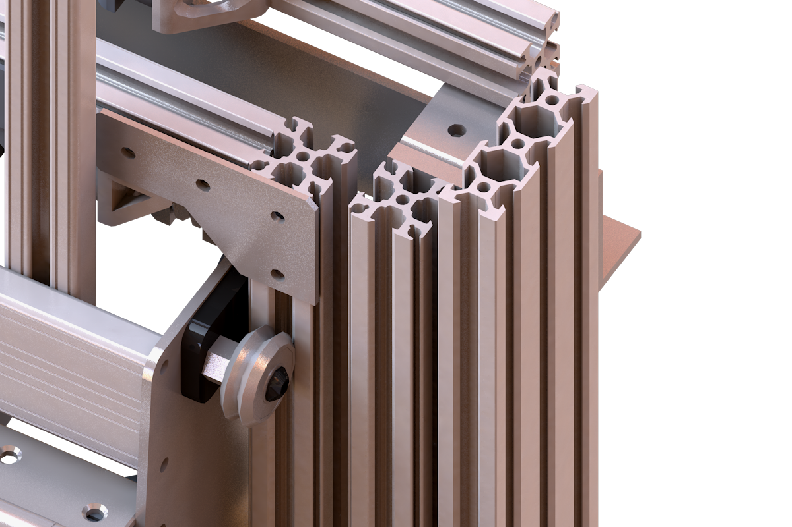
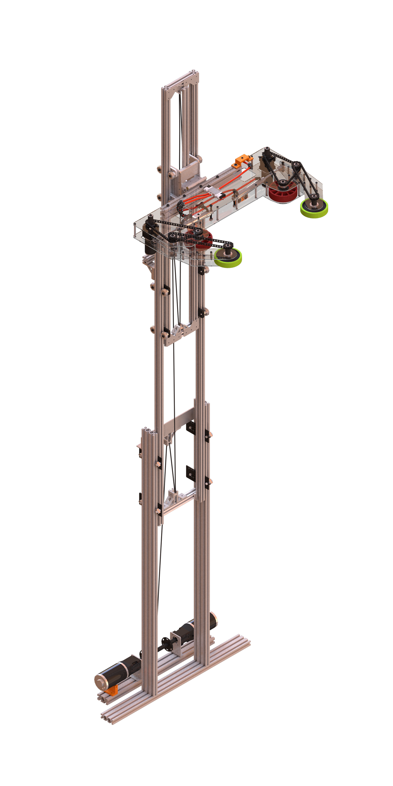
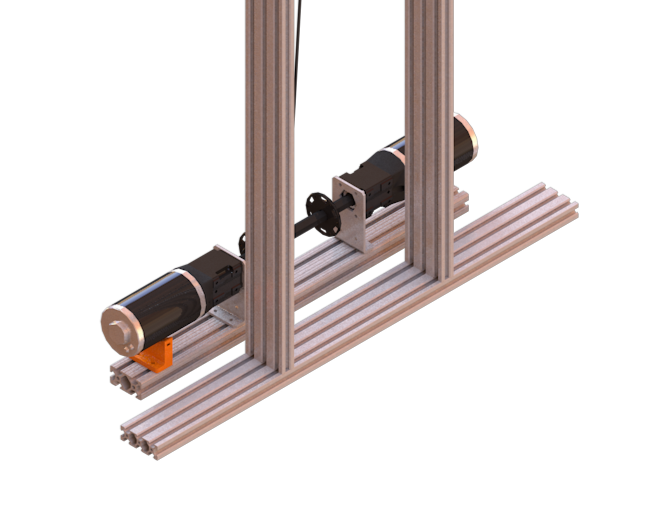
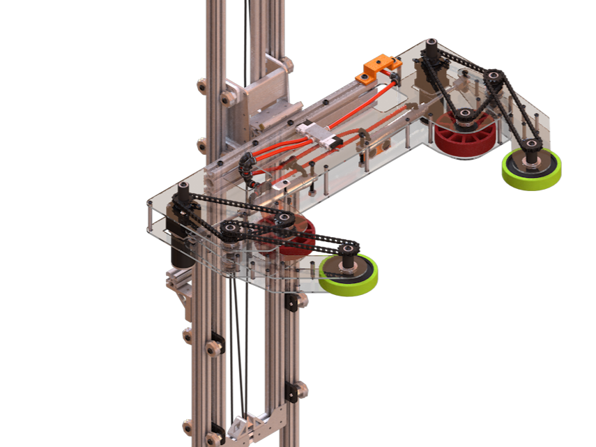
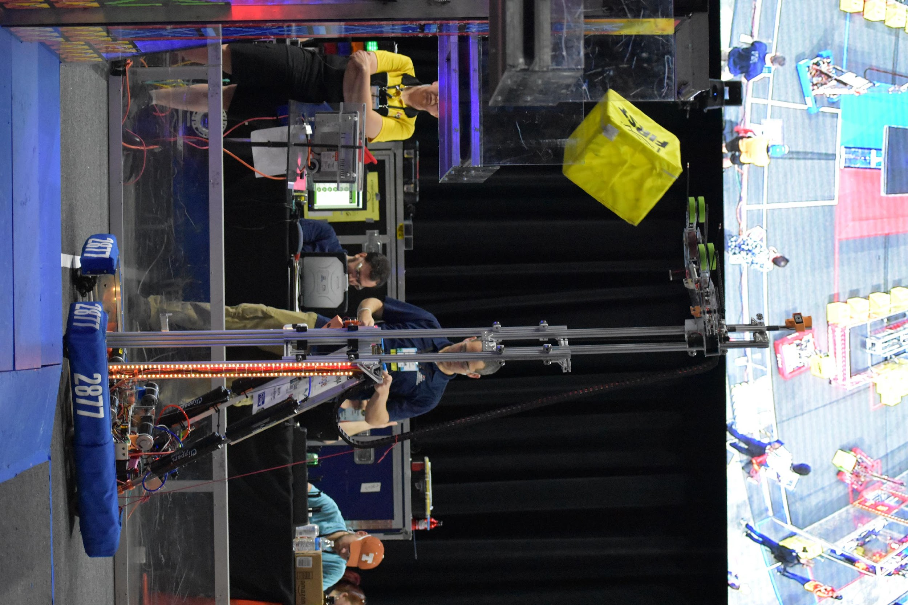

FIRST Robotics Competition 2018 Robot
This three-stage telescoping elevator was designed for a robot competing in the 2018 FIRST Robotics Competition. The goal was to place a cube on an elevated platform with varying heights of up to 96 inches tall. The fast and robust elevator design resulted in our robot ranking 6th on Daly Field and reaching the semifinals of our division at the FRC World Championship as an alliance captain.
Power Up!
The challenge this year was to pick up milk crates and lift them up to a tall seesaw platform. For each second the seesaw was tilted to your team's half of the field, you would score points.
Elevator Stage Design
The elevator was made up of three stages that were stacked inwards as opposed to forwards to minimize bending the moment when fully extended. The stages were made of slotted aluminum extrusion to allow conical wheels to remain stable even during rapid extension and retraction. Speed was key here because every second the seesaw was tilted towards the opposing teams side, the more points they got.

The elevator extended to up to 100 inches tall and retracted to 48 inches to fit within height limit enforced at the start of the match.

The elevator extended to up to 100 inches tall and retracted to 48 inches to fit within height limit enforced at the start of the match.
Other Design Choices
The elevator was driven by a lift system powered by two brushed DC motors with planetary gearboxes attached to provide the gear reduction to achieve the necessary torque.

The third stage included a hinge system to allow the claw to fold upwards to fit within the robot’s frame at the beginning of the match

Our Robot in Action!
